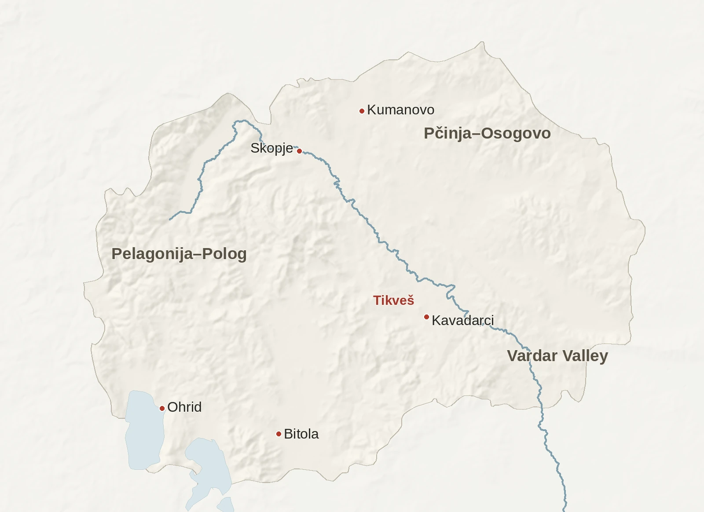
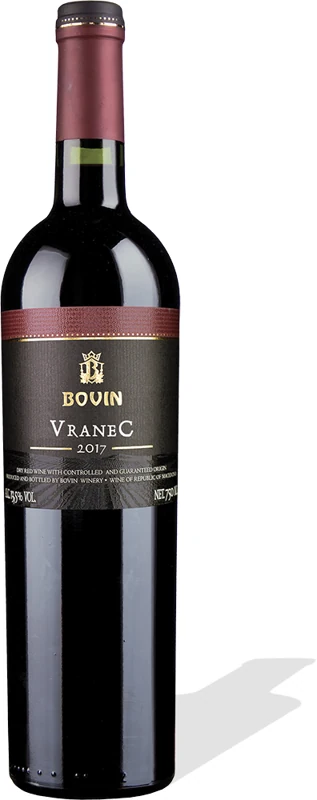

Start in the valley of the Vardar with two grapes. Vranec is the dark, firm red that became Macedonia’s signature. Temjanika is a fragrant white that can smell like fresh grapes even when the wine is dry. Between them is the first useful lesson in Macedonian wine. The place on the label tells you where to look on a map. The grape and the producer tell you what you might find in the glass.
This guide starts with the wine regions inside the country, then follows the names you’ll actually see on bottles.
Where it’s made

Vardar Valley
The main wine region, also called Povardarie. Follow the river from Skopje through Veles toward Negotino and Demir Kapija. Tikveš, around Kavadarci and Negotino, is one district within it.
Pelagonija–Polog
The western wine region includes the districts around Bitola, Prilep, Prespa, and Ohrid. Vineyards sit on plateaus and among mountains, with colder winters than the central valley.
Pčinja–Osogovo
The northeastern wine region includes Kumanovo, Kratovo, and Pijanec. Its vineyards occupy mountain slopes, some as high as 850 meters according to Wines of Macedonia.
Grapes to know
- Vranec
- The signature red. Look for dark fruit and a drying grip, like strong black tea. The same grape is called Vranac in Montenegro.
- Kratošija
- The grape also known as Zinfandel or Primitivo. It appears alongside Vranec in blends such as Barovo Red.
- Stanušina
- A Macedonian red grape made into red wine and rosé. Popova Kula’s dry rosé is one place to meet it.
- Smederevka
- A white grape with a long presence in the region. Try it as a lighter dry white and look for the familiar tartness of green apple or citrus.
- Temjanika
- Look for the scent of flowers and fresh grapes. Tikveš’s dry white is made from Muscat Blanc à Petits Grains, bottled here under the Temjanika name.
Three first bottles
Taste the white first, then put the reds side by side. The white introduces a different grape. The two reds give you a dry and a semi-dry example of Vranec.

Temjanika
Tikveš · Dry whiteSmell it before you sip. The floral, grapey aroma can suggest sweetness. The finish tells you how dry it actually is.

Vranec
Bovin · Dry redTake a sip and wait a moment. The sensation along your gums is tannin. The dark fruit you smell and taste is a separate thing.

T’ga za jug
Tikveš · Semi-dry redTry it beside the dry Vranec. This one has some sugar left in the finished wine. Notice how that changes the impression of the fruit.
Bottle images courtesy of the producers’ product materials.
Read the label
Turn the bottle around. One name can be the winery, another the grape, and another the place. On T’ga za jug, the largest words are the name of the wine.
- Producer
- Who made it? Tikveš is a winery in Kavadarci. Tikveš can also refer to the district the grapes came from.
- Grape or blend
- What went in? Vranec is a grape. Barovo Red is a wine named for a vineyard site. The producer’s technical sheet shows the blend and gives the proportions for that vintage.
- Style
- How sweet is it? Look for suvo (dry) or polusuvo (semi-dry). The color words crveno (red) and belo (white) give you a separate piece of information.
- Vintage
- When were the grapes harvested? Read the year before comparing blends, tasting notes, or time in oak across two bottles.
The wine beyond the bottle
In Kavadarci, the wine year has a date in winter. On February 14, the feast of Sveti Trifun, growers prune a few vines to mark the start of work in the vineyard. A local account describes pouring wine and rakija on the cut vines in the hope of a good crop.
The scale of winemaking changed in the Yugoslav years. Vranec was planted experimentally near Skopje after the Second World War and proved productive enough for a large market. The grape that spread through those plantings is now on a bottle named after Konstantin Miladinov’s “Longing for the South.”
Vranec
Go deeper into the grape, follow the vineyards on the Tikveš map, and compare Barovo and Bela Voda bottle by bottle.
Sources
- Wines of Macedonia, wine regions and Tikveš wine district.
- Wines of Macedonia, profiles of Vardar Valley, Pelagonija–Polog, and Pčinja–Osogovo.
- Zvonko Herceg, “Discovering Vranec and North Macedonia,” WSET, 2021.
- Bovin, Vranec. Popova Kula, Stanušina Rosé.
- Tikveš, Temjanika, Smederevka, and T’ga za jug.
- Tikveš, technical sheets for the 2019 Barovo Red and Bela Voda Red.
- Municipality of Kavadarci, Sveti Trifun and local festivities.
- Bojana Samardžieva and Ana Vitanova-Ringačeva, account of ritual pruning in Tikveš, Goce Delčev University, 2021.